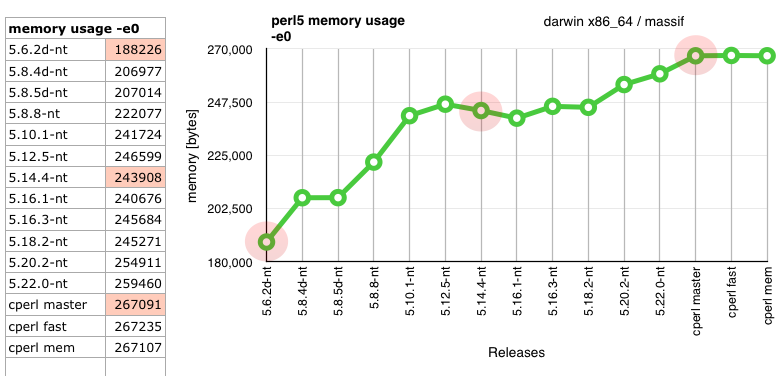
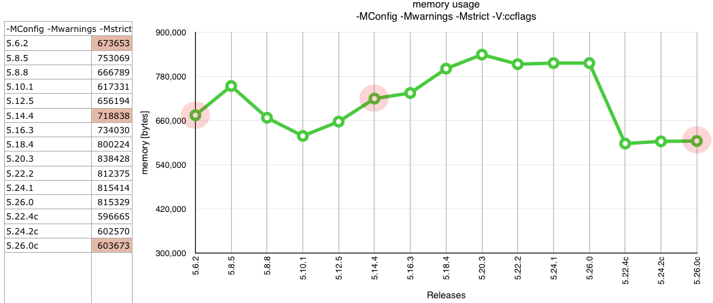
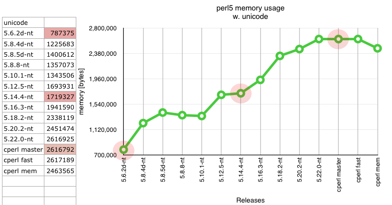
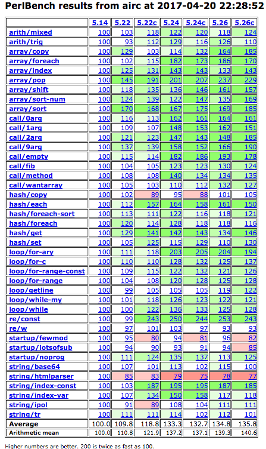

The name cperl stands for a perl with classes, types, compiler support, continuation of perl5 development or just a company-friendly perl.
cperl started Feb. 2015 when :const was added, parrot was killed and
it became clear that optimizing for fun is better than waiting for
someone else to allow it, and the ongoing destruction has to be
stopped, even if it will cause a massive blame game.
Currently it is about 20% faster than perl5 overall, >2x faster then
5.14 and uses the least amount of memory measured since 5.6, i.e. less
than 5.10 and 5.6.2, which were the previous leaders. While perl5.22
uses the most memory yet measured. cperl 5.24 and 5.26 is about 2x
faster than 5.22 in bigger real-world applications. Esp. function
calls with signatures are 2x faster, normal functions with a my(..) =
@_; prolog are automatically promoted to signatures.
But only a small number of needed features are yet merged. The plan
was to support most perl5-compatible perl6 features ("do not break
CPAN"), improve performance and memory usage, re-establish compiler
(B::C) support, re-establish perl5 core development which
essentially stopped 2002, use perl6-like development policies, better
security fixes and maintenance than the upstream p5p perl5, and stop
the ongoing destruction going on in p5p. See README.cperl.
Almost perl6-like classes, roles, methods, fields. classes are user-facing types, and support for types, restricted stashes and fast fields is builtin.
Tested and developed on linux and darwin 64bit. darwin 32bit fails on two unrelated core tests (issignaling setpayloadsig + chmod linked in). Windows is smoked with mingw, cygwin and MSVC 10 and 12 for 32 and 64bit. The BSD's and Solaris are only tested before a release.
The current stable release is
the latest development release:
We also have:
All tests pass. CPAN works.
Some fixes in my rurban/distroprefs repo for certain CPAN modules are needed.
v5.24.0c, v5.24.1c and v5.24.2c have about 24 fixes, for problems which are not fixed in perl-5.24.1. Ditto with 5.26, cperl-5.22.4c has about 20 fixes which are not in the latest perl-5.22.3. Since cperl development is about 10x faster than p5p development, and damage done within p5p increases, these numbers do increase over time.



 For all versions see bench-all/
$_. The lexical topic feature is supported.warn_security API.
Since v5.25.1c such security warnings are logged at STDERR/syslog with the
remote user/IP.Most of them only would have a chance to be merged upstream if a p5p committer would have written it.
But some features revert decisions p5p already made. See README.cperl. When in doubt I went with the decisions and policies perl5 made before 2001, before p5p went downwards. It is very unlikely that p5p will revert their own design mistakes. It never happened so far.
Download the latest .tar.gz or .tar.bz2 from github.com/perl11/cperl/releases/
tar xfz cperl-5.VER
cd cperl-5.VER
./Configure -sde
make -s -j4 test
sudo make install
add this file to /etc/yum.repos.d/perl11.repo, with either el6 or el7.
el6 for Centos6 and older Fedora and RHEL, el7 for Centos7 and newer variants.
[perl11]
name=perl11
baseurl=http://perl11.org/rpm/el7/$basearch
enabled=1
gpgkey==http://perl11.org/rpm/RPM-GPG-KEY-rurban
gpgcheck=1
run as root: yum update; yum install cperl
add this file to /etc/apt/sources.list.d/perl11.list
deb http://perl11.org/deb/ sid main
run as root:
apt update
wget http://perl11.org/deb/rurban.gpg.key
apt-key add rurban.gpg.key
apt install cperl
download the pkg installer from http://perl11.org/osx/
download the self-extracting zip from http://perl11.org/win/
and install it into C:\cperl via the cperl-5.26.0-win64.exe -InstallPath="C:\\cperl" cmdline option.
The -d debugger fails on most signatures.
See the github issues: github.com/perl11/cperl/issues
The following CPAN modules have no patches for 5.26.0c yet:
Time::Tiny, Date::Tiny, DateTime::Tiny feature DateTime::locale broken since 5.22. unrelated to cperl, -f force install.
Many other packages clash with an unneeded mix of Test::More in inc/ or t/. Some other use wrong undocumented Test-Simple calls, which the modernized improvement complains about, or use Test2, which is unsupported and not recommended to use in its current state. In a Test2 branch is a fixed version which is still 20% slower.
Since 5.24.1c with some modernized core modules some signatures are
pretty strictly typed to catch wrong usages and enforce better code.
See the Test::More::skip() FAQ or below.
Patches are needed for Module::Build, IO::Socket::SSL and Net::SSLeay.
Breakage is much less than with a typical major perl5 release, and the patches for most common CPAN modules are provided in my rurban/distroprefs, so the upgrade is seemless. E.g. Test2 (the new Test::Simple) broke >15 modules without any patches. Test2 is not yet supported, as it is still 20% slower, and has no significant benefit over the old Test-Simple. And they chose to break the API and performance, instead of letting users select the new Test2 module.
skip has the historical problem of mixed up arguments of $why
and $count, so those arguments are now stricter typed to catch all
wrong arguments. At compile-time.
When you use one or two args for Test::More::skip(), they need to
properly typed.
I.e.
Mandatory:
skip $why, 1 => skip "$why", 1
plan tests => 1;
SKIP: { skip } => SKIP: { skip "", 1; }
Recommended:
skip "why", scalar(@skips) => skip "why", int(@skips)
skip "why", 2*$skips => skip "why", int(2*$skips)
Rationale:
skip() is a special case that the two args are very often mixed
up. This error had previously to be detected at run-time with a
fragile \d regex check. And in most cases this problem was never
fixed, e.g. in Module::Build.
Only with checking for strict types I could detect and fix all of the
wrong usages, get rid of the unneeded run-time check, the code is
better, all errors are detected at compile time, and not covered at
run-time and with the new strict types the code is much more readable,
what is the str $why and what the UInt $count argument.
When the $count can be optional
The Test::More docs state the following: It's important that $how_many accurately reflects the number of tests in the SKIP block so the # of tests run will match up with your plan. If your plan is no_plan $how_many is optional and will default to 1.
I.e. Only with plan tests => 'no_plan' a bare skip is allowed.
$count can never be a NV, thus :Numeric (which would allow
2*$skip) is wrong. It needs to be :UInt. The used range op
(pp_flip) would die at run-time with a overflowed number. die
"Range iterator outside integer range". $count := -1 will lead to
test timeouts.
Note that cperl doesn't yet check UInt types at run-time for
negative values. This might change in later versions with the use
types pragma. For now the $count type is relaxed to :Numeric to
permit simple arithmetic.
scalar(@array) for array or hash length is also bad code, it needs
to be replaced with int(@array). Such a length can never be a NV or
PV, it is always a UInt. Using int() is clearer and better, at least
for cperl.
This is also the answer to the question why scalar(@array) is
considered bad, and why counts and lengths cannot overflow.
This could have been easily taken up upstream, was already perlbug'ed and published, and did not violate any of the p5p commit policies and previous decisions. From those 47 patches 2 were taken, some were rejected and 2 were butchered, i.e. rewritten in a worse way.
Those branches could have theoretically been merged upstream, but the chances are limited. So they are based on master.
windows: autoinstall of binary libffi missing. more convenience methods needed.
See the relevant subtickets: compose role methods, use mro on classes, array and hash field syntax ($obj->array[0], $obj->hash{key}), :before, :after, :around method composition, class :native, multiple dispatch (fast for binary, slow for mega), tiny MOP (Mu, Metamodel::ClassHOW).
works for the compiler, but does not do COW yet, i.e. slower for uncompiled perls, faster for compiled. The upstream COW implementation is still a complete mess.
much faster and much less memory, but 3 minor scope tests fails.
Need to fix some Makefile deps and break cross-references.
works, but unsure if good enough. . instead of -> works only for
a few method calls and clashes with string concat. A disruptive
design decision, which probably cannot be backported. Chip has a
perl6-like patch which changes . to ~ for string concat also,
but this doesn't accept valid perl5 syntax then. A blocker.
optimize the speed for small hashes, less keys, inline 3-7 as array. esp. needed for the new objects. redis has a limit of 256 (zipmap) favoring linear search over hash lookups. with those we could think of using hashes again more often. now they are way too slow for everything.
compile/dump to native code via emacs unexec, on most platforms. Questionable if to keep our private malloc soon.
optimize space for small strings.
and various [hash tables refactorings]((https://github.com/perl11/cperl/issues/24):
feature/gh24-base-hash feature/gh24-he-array feature/gh24-oldnew-hash-table featurex/gh24-array_he featurex/gh24-hash-loop featurex/gh24-hash-loop+utf8 featurex/gh24-hash-utf8 featurex/gh24-hopscotch-hash.
These are major new features, and have no chance to be merged upstream. They also revert some wrong decisions p5p already made.
int, uint, num, str. unboxed data on the stack and pads. some minor compiler fixes needed, esp. for typed pads. boxed or unboxed, that's the question.
some compiler fixes needed.
feature/CM-712-cperl-types-proto
constant fold everything, not only with empty () protos.
lots of small attempts, but still too hairy. might need a complete hash table rewrite. getting there, but not yet finished for 5.26.
various more hash tables:
featurex/gh24-one-word-ahe, featurex/gh24-open-hash, featurex/gh24-hopscotch-hash
the jit code: feature/gh220-llvmjit
linear symbol table (not nested stashes) and optree linearization.
--
2017-08-07 rurban